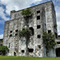
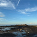

-
 <水梯田>簡志銘│業務一處 \ 客戶服務部層層疊疊的梯田如鏡，映山林綠意，宛如一處人間秘境。
<水梯田>簡志銘│業務一處 \ 客戶服務部層層疊疊的梯田如鏡，映山林綠意，宛如一處人間秘境。 -
 <鳥巢>簡志銘│業務一處 \ 客戶服務部東北角鄉村某個角落，有一處人工搭建出來的鳥巢，讓人可以坐在鳥巢裡面，可以盡情放空冥想或是休閒的看書，享受著與大自然共處的時光。
<鳥巢>簡志銘│業務一處 \ 客戶服務部東北角鄉村某個角落，有一處人工搭建出來的鳥巢，讓人可以坐在鳥巢裡面，可以盡情放空冥想或是休閒的看書，享受著與大自然共處的時光。 -
<快樂躺平豹>曾玟翔│平鎮營運一處 \ 海關課我是一隻快樂無憂無慮的海豹~
-
<關渡棧橋碼頭>黃偉玉│品質本部午後，從關渡宮租了腳踏車，一路騎到這裡，在開幕不到一年的貨櫃市集喝喝飲料，吹吹風，夕陽下，意外發現這個碼頭美得像在國外。
-
<日月潭蔣公碼頭>黃偉玉│品質本部從飯店租了腳踏車一路騎到這裡，這裡沒有水社碼頭和伊達邵碼頭有名，小小的秘境卻很復古，不熱門所以沒有滿滿的遊客，一個可以盡情拍美麗照片的景點。
-
<澳門玫瑰聖母堂>馮朝富│基站產品開發處 \ 基站硬體部玫瑰聖母堂，由天主教澳門教區管理。位於澳門的市中心，建立於1587年，至今已有400多年歷史。
-
 <澳門巴黎人>馮朝富│基站產品開發處 \ 基站硬體部巴黎埃菲爾鐵塔是愛與浪漫的象征，也見證著千萬人的浪漫宣言與愛情故事，澳門巴黎人以艾菲爾鐵塔一半的比例設計而成作為地標。
<澳門巴黎人>馮朝富│基站產品開發處 \ 基站硬體部巴黎埃菲爾鐵塔是愛與浪漫的象征，也見證著千萬人的浪漫宣言與愛情故事，澳門巴黎人以艾菲爾鐵塔一半的比例設計而成作為地標。 -
 <陸家嘴三件套>郝奕涵│電子技術處 \ 安規暨環保事務部站在晚上十點前的外灘，映入眼簾的是著名的陸家嘴三件套，由右至左分別是高632米的上海中心大廈（打蛋器）、高492米的上海環球金融中心（開瓶器）、高420米的上海金茂大廈（注射器）以及高468米深粉色搶眼的東方明珠電視塔，搭配著其他閃亮亮的建築霓虹燈，此地已成為上海必來景點地標之一。
<陸家嘴三件套>郝奕涵│電子技術處 \ 安規暨環保事務部站在晚上十點前的外灘，映入眼簾的是著名的陸家嘴三件套，由右至左分別是高632米的上海中心大廈（打蛋器）、高492米的上海環球金融中心（開瓶器）、高420米的上海金茂大廈（注射器）以及高468米深粉色搶眼的東方明珠電視塔，搭配著其他閃亮亮的建築霓虹燈，此地已成為上海必來景點地標之一。 -
<澳洲波浪岩>劉柏君│IPC研發一處 \ IPC研發一處位於澳洲海登的波浪岩，一般人都是在下面拍攝波浪岩的壯觀，但爬了一端陡坡來到波浪岩上方後，才發現別有洞天，一覽無遺的270度壯闊美景，坐在這鬼斧神工的大地上邊看著雲朵移動，突然意識到自己的渺小，也體會到沒有什麼煩惱是過不去的~
-
 <The Perth Mint>劉柏君│IPC研發一處 \ IPC研發一處位於澳洲伯斯的鑄幣廠，是目前澳洲最古老並且還在運作的鑄幣廠，這邊擁有目前世界上最大最重的金幣，金幣面值是100萬澳元，來這邊還可以看到現場煉金術，非常值得來此一遊。
<The Perth Mint>劉柏君│IPC研發一處 \ IPC研發一處位於澳洲伯斯的鑄幣廠，是目前澳洲最古老並且還在運作的鑄幣廠，這邊擁有目前世界上最大最重的金幣，金幣面值是100萬澳元，來這邊還可以看到現場煉金術，非常值得來此一遊。 -
<藍色小屋>劉柏君│IPC研發一處 \ IPC研發一處位於澳洲伯斯的藍色小屋，是之前周杰倫MV”粉色海洋”的拍攝場景，都來這邊旅遊了，怎麼可能不來這邊朝聖一下呢~不過這個小屋裡面是真的有住人的，千萬別打擾到裡面的屋主喔!!
-
<暮色願影>黃心鈺│AI數據智能處 \ AI模型訓練部風輕輕吹過寂靜的海邊，一抹夕陽映照天際，如同人們稍縱即逝的希望。當黃昏退去，只留下對願望的執著，就像夕陽沉沒後的漫長黑夜，靜靜等待天明。
-
 <充滿童話色彩的庫倫洛夫>金國琳│產品十三處庫倫洛夫又稱CK小鎮，整個小鎮充滿童話氛圍，彩色的房子沿著伏爾塔瓦河蜿蜒，散步時如走入故事書。登上城堡塔樓，俯瞰紅瓦屋頂，景色令人難忘。
<充滿童話色彩的庫倫洛夫>金國琳│產品十三處庫倫洛夫又稱CK小鎮，整個小鎮充滿童話氛圍，彩色的房子沿著伏爾塔瓦河蜿蜒，散步時如走入故事書。登上城堡塔樓，俯瞰紅瓦屋頂，景色令人難忘。 -
 <湖光山色中的人間仙境 - 哈修塔特>金國琳│產品十三處哈修塔特是湖光山色交織的夢幻小鎮，湖面如鏡映著木屋與雪山，湖面上優雅的天鵝，宛如畫卷。漫步石板小路，家家戶戶的花窗綴滿驚喜。清晨的寧靜與晚霞的絢爛，都讓人陶醉。登上觀景台，整個村莊盡收眼底，美得令人屏息，彷彿走進人間仙境。
<湖光山色中的人間仙境 - 哈修塔特>金國琳│產品十三處哈修塔特是湖光山色交織的夢幻小鎮，湖面如鏡映著木屋與雪山，湖面上優雅的天鵝，宛如畫卷。漫步石板小路，家家戶戶的花窗綴滿驚喜。清晨的寧靜與晚霞的絢爛，都讓人陶醉。登上觀景台，整個村莊盡收眼底，美得令人屏息，彷彿走進人間仙境。 -
 <神戶港夜景>王天保│軟件設計處 \ BMC智慧平台管理部這張照片呈現的是神戶港的夜景風貌。畫面中央是一座亮起藍綠色燈光的摩天輪，其倒影在水面上閃爍著夢幻光芒，與右側「MOSAIC」商場燈光相映成趣。遠方還可見到工業吊車與高樓大廈，構築出神戶特有的港灣城市風格。夜幕低垂，城市燈火開始閃耀，映出一種寧靜中帶著繁華的感受。神戶港一直以來都是浪漫與時尚的象徵，是情侶約會與攝影愛好者的天堂。這張照片不僅展現出港口城市的現代化風貌，也捕捉了夜晚燈光下獨有的詩意與氛圍。
<神戶港夜景>王天保│軟件設計處 \ BMC智慧平台管理部這張照片呈現的是神戶港的夜景風貌。畫面中央是一座亮起藍綠色燈光的摩天輪，其倒影在水面上閃爍著夢幻光芒，與右側「MOSAIC」商場燈光相映成趣。遠方還可見到工業吊車與高樓大廈，構築出神戶特有的港灣城市風格。夜幕低垂，城市燈火開始閃耀，映出一種寧靜中帶著繁華的感受。神戶港一直以來都是浪漫與時尚的象徵，是情侶約會與攝影愛好者的天堂。這張照片不僅展現出港口城市的現代化風貌，也捕捉了夜晚燈光下獨有的詩意與氛圍。 -

<三鳳宮>吳柏欣│設計品質保證處位於臺灣高雄三塊厝的廟宇，初建於明鄭永曆廿七年，舊名「三鳳亭」，所奉主神為中壇元帥，是南臺灣著名的道教聖地，也是高雄市最具代表性的廟宇之一。
-
<老梅綠石槽>吳柏欣│設計品質保證處老梅綠石槽位於北海岸石門區，沿著老梅社區的海岸線上即可看見。每到四、五月因為東北季風慢慢減弱，當地的石槽便長滿一大片綠色的海藻，排列整齊，壯闊景觀，是難得的特殊景象。
-
<小黑狗>吳柏欣│設計品質保證處鄉下農村人家裡養的一隻可愛小黑狗。
-
 <國王湖（Königssee）/德國>羅雅穗│業務處 \ 業務三部隨手一拍都像是明信片，國王湖仙氣飄飄，站在湖邊所感受到的寧靜是前所未有，好似身心靈都得到療癒，那一刻真的靜止了，讀萬卷書不如行萬里路，有些地方，真的要親身經歷才會知道那個美與感動。
<國王湖（Königssee）/德國>羅雅穗│業務處 \ 業務三部隨手一拍都像是明信片，國王湖仙氣飄飄，站在湖邊所感受到的寧靜是前所未有，好似身心靈都得到療癒，那一刻真的靜止了，讀萬卷書不如行萬里路，有些地方，真的要親身經歷才會知道那個美與感動。 -
 <卡蘿維瓦利（Karlovy Vary）/捷克溫泉小鎮>羅雅穗│業務處 \ 業務三部漫步在這座溫泉小鎮，像是走進了一幅水彩畫，色彩柔和的建築透著陽光排列整齊，每一棟棟各有特色，卻毫不違合，保存極為完整的溫泉小鎮，帶著別具特色的溫泉杯，還可以試飲具有療效的溫泉，請記得嘗鮮一下溫泉餅，跟臉一樣大的法蘭酥口感，是一個很特別的體驗。
<卡蘿維瓦利（Karlovy Vary）/捷克溫泉小鎮>羅雅穗│業務處 \ 業務三部漫步在這座溫泉小鎮，像是走進了一幅水彩畫，色彩柔和的建築透著陽光排列整齊，每一棟棟各有特色，卻毫不違合，保存極為完整的溫泉小鎮，帶著別具特色的溫泉杯，還可以試飲具有療效的溫泉，請記得嘗鮮一下溫泉餅，跟臉一樣大的法蘭酥口感，是一個很特別的體驗。 -
 <巴黎聖母院>歐怡伶│系統應用研發處 \ 系統應用一部巴黎最有代表性的歷史古蹟，於2019年發生重大火災，所幸建築整體結構得以留存，再歷經重建修復後，在2024年12月重新開放，讓我們可以再次參觀800多年的哥德式建築。
<巴黎聖母院>歐怡伶│系統應用研發處 \ 系統應用一部巴黎最有代表性的歷史古蹟，於2019年發生重大火災，所幸建築整體結構得以留存，再歷經重建修復後，在2024年12月重新開放，讓我們可以再次參觀800多年的哥德式建築。 -
<再靠近一點>歐怡伶│系統應用研發處 \ 系統應用一部小琉球因擁有豐富的珊瑚礁生態，是綠蠵龜數量最多的地方，不論在海上或海底都有高機率性可以遇見，但切記海龜是保育類動物，如果太靠近…最高可處30萬元罰款喔！
-
<蘑菇村裡的一小角>陳婕妤│策略採購三處 \ NB機構策略採購二部走在蘑菇村的街道上，突然看到小狗狗在曬太陽，好幸福的感覺。
-
<特雷維噴泉>陳婕妤│策略採購三處 \ NB機構策略採購二部義大利最著名的許願池，當然也不免俗地投下硬幣來許個願。
-
 <鄭王廟>藍文欣│董事長室曼谷著名地標，位於昭披耶河畔，也是泰國最具代表性的佛教建築之一。
<鄭王廟>藍文欣│董事長室曼谷著名地標，位於昭披耶河畔，也是泰國最具代表性的佛教建築之一。 -

<聖心聖殿>連柏柔│企業產品硬體工程一處聖心聖殿坐落於巴黎的蒙馬特高地上，有別於市區其他建築的設計，聖心聖殿兼具羅馬及拜占庭風格，教堂正面兩側還有路易九世及聖女貞德的騎馬雕像，使其成為巴黎著名地標之一。
-
<法國巴黎凱旋門>連柏柔│企業產品硬體工程一處拿破崙下令建造的第一座拱門即是巴黎著名的「凱旋門」，其大型浮雕、淺浮雕、羅列戰役列表、羅列姓名列表皆耐人尋味，為造訪巴黎不可錯過的景點！
-
 <羅東林場的時光列車>楊子慧│機構技術處 \ 聲學音響部這台停駛在羅東林場的蒸氣火車頭，曾在林業黃金時代馱載著原木穿梭林間，如今斑駁鏽蝕、訴說歲月的痕跡。這裡不只是遺跡，更是一段見證宜蘭林業發展的珍貴故事。
<羅東林場的時光列車>楊子慧│機構技術處 \ 聲學音響部這台停駛在羅東林場的蒸氣火車頭，曾在林業黃金時代馱載著原木穿梭林間，如今斑駁鏽蝕、訴說歲月的痕跡。這裡不只是遺跡，更是一段見證宜蘭林業發展的珍貴故事。 -
<藍天下的映像詩>楊子慧│機構技術處 \ 聲學音響部在台中中央公園晴朗的一日，藍天與建築倒映在湖面，勾勒出一幅靜謐的風景畫。樹影婆娑，水波不興，整體景致如詩如畫，展現了都市綠地的現代美學與自然和諧共處的魅力。
-
<台灣黑熊英挺的站姿>楊子慧│機構技術處 \ 聲學音響部在台北動物園中，台灣黑熊驕傲地站立在大石上，展現出牠自然又充滿力量的身姿，胸前獨特的V字白斑清晰可見，是台灣黑熊的經典特徵。
-
<兼六園-大松樹>何孟霖│基站產品開發處 \ 基站硬體部日本三大名園之一，整座公園展現了日式之美，一棵枝葉茂盛的大松樹挺立於雪白庭園中央，顯得莊嚴靜謐。
-
<威風凜凜的鹿>何孟霖│基站產品開發處 \ 基站硬體部一隻鹿驕傲的站在世界遺產東大寺的門口，任由遊客拍照。
-
 <阿爾卑斯高山健行>劉秋玲│六標準差執行小組在瑞士阿爾卑斯高山健行是一種特別的享受，欣賞著後方的冰河，緩步於此感受著無比新鮮的空氣，眼中處處是大景。
<阿爾卑斯高山健行>劉秋玲│六標準差執行小組在瑞士阿爾卑斯高山健行是一種特別的享受，欣賞著後方的冰河，緩步於此感受著無比新鮮的空氣，眼中處處是大景。 -
 <法國艾日小山城>劉秋玲│六標準差執行小組艾日（Eze）小山城，是位於法國尼斯與摩納哥之間的一個蔚藍海岸的山城小鎮，這座山城建立於懸崖上，具有獨特味道，巷弄間一個轉身都是美景。
<法國艾日小山城>劉秋玲│六標準差執行小組艾日（Eze）小山城，是位於法國尼斯與摩納哥之間的一個蔚藍海岸的山城小鎮，這座山城建立於懸崖上，具有獨特味道，巷弄間一個轉身都是美景。 -
<摩納哥山城>劉秋玲│六標準差執行小組摩納哥城，位於法國蔚藍海岸的心臟地帶，是世界上最小的獨立國家之一，也是豪華和奢華的代名詞，處處看到名車在F1賽道上奔馳。繽紛小巷中的寧靜特別令人喜愛。
-
 <嘆息橋>陳俊翰│電子技術處 \ 安規暨環保事務部嘆息橋的兩端連接威尼斯總督宮的審訊室和一處監獄，囚犯在被宣判之後，會經由此橋走向死牢，當經過此橋時，不免從窗口望一眼外面的世界而長嘆，因感嘆即將結束的人生而得名。
<嘆息橋>陳俊翰│電子技術處 \ 安規暨環保事務部嘆息橋的兩端連接威尼斯總督宮的審訊室和一處監獄，囚犯在被宣判之後，會經由此橋走向死牢，當經過此橋時，不免從窗口望一眼外面的世界而長嘆，因感嘆即將結束的人生而得名。 -
<Gornergrat 觀景台>陳俊翰│電子技術處 \ 安規暨環保事務部位於3100公尺高的瑞士Gornergrat觀景台，可360度無死角的欣賞馬特洪峰及Gorner冰河，旁邊有著鼎鼎大名的3100 Kulm hotel，據說裡面每間房型窗外都能看到各種山峰。
-
 <荒漠休息站>蔡孟勳│工業設計處 \ 產品設計二部加油站如守護神般在黃沙漫舞的荒漠中守護著過路旅人。
<荒漠休息站>蔡孟勳│工業設計處 \ 產品設計二部加油站如守護神般在黃沙漫舞的荒漠中守護著過路旅人。 -
<黑沙漠>蔡孟勳│工業設計處 \ 產品設計二部黑沙漠寂靜無垠，岩石如古獸守望，紅車孤立沙海中。遠山模糊，雲影低垂，似夢境邊緣的低語，時間在此凝滯。
-
<無邊>蔡孟勳│工業設計處 \ 產品設計二部無邊沙漠延展天際，黃沙如海波蕩，孤車點綴寂寥。遠山模糊，雲影輕飄，時間在此融化，宛如永恆的低語。
-
 <Vacation Mode>王凱翔│工程支援處 \ 行政發展部攝於埃及紅海，在下榻飯店的私人海灘，插著許多遮陽傘供旅人們乘涼、看海，很美的一個地方。
<Vacation Mode>王凱翔│工程支援處 \ 行政發展部攝於埃及紅海，在下榻飯店的私人海灘，插著許多遮陽傘供旅人們乘涼、看海，很美的一個地方。 -
<Sunrise>王凱翔│工程支援處 \ 行政發展部攝於埃及紅海，拍攝這張照片的前一晚早早設好鬧鐘，清晨五點多就爬起來，守著守著，終於捕捉到紅海的日出。
-
<Path>王凱翔│工程支援處 \ 行政發展部攝於埃及紅海，原先是要提早來看日出，看完日出後意外地捕捉到這個畫面，看著看著就出神了，聽著海浪輕盈地拍打聲，感覺好舒服且平靜，整個人都放鬆下來。


{kind=link}
{kind=link}
{kind=link}
{kind=link}
{kind=link}
{kind=link}
{kind=link}
{kind=link}
{kind=link}
{kind=link}
{kind=link}
{kind=link}
{kind=link}
{kind=link}
{kind=link}
{kind=link}
{kind=link}
{kind=link}
{kind=link}
{kind=link}
{kind=link}
{kind=link}
{kind=link}
{kind=link}
{kind=link}
{kind=link}